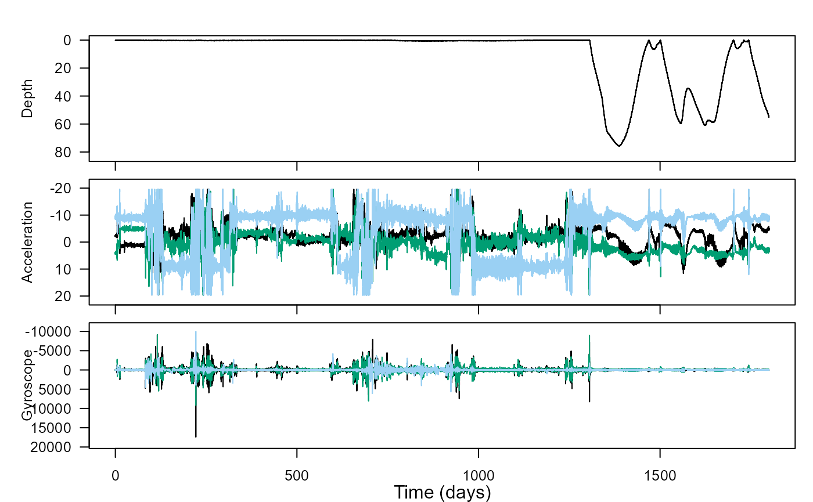

Tagtools vignettes: overview and introduction
tagtools project team
2021-07-29
overview.RmdWelcome to TagTools! On behalf of the team who developed this website and these software tools, thanks for checking out our project—we hope you’re doing well.
These webpages are called vignettes, which means they can run in R directly. Each page is designed to teach you how to use a few functions together to accomplish usually a single task, or a short set of interrelated tasks. All of them might be helpful to you as you learn and work in biologging.
In this page, you will be quickly introduced to each of the vignettes included in the package, so that you might be able to get a sense for which would be helpful to you today. They are presented in a suggested order. More help is generally provided in the vignettes earlier in sequence, and more independence is generally required in some of the later ones.
Estimated time to read this vignette: 20 minutes.
More background: What’s in a Vignette?
Already familiar with the concept? Feel free to skip down to Introductory vignettes!
A vignette contains various chunks of information one after the other, including plain text chunks (like this one), code chunks, and—especially in this package—collapsible answers and results sections. These are really plain text chunks and code chunks running directly with some HTML code to make them easily hidden by default, then openable with a click of a button.
Here is an example of a code chunk. Click “Code” below right to expand it.
# This is a code chunk!
print("Hello, Biologger!")
print(sqrt(256))
yData <- sin(c(1:24)*pi/12)
plot(x = c(1:length(yData)), y = yData, xlab = "X", ylab = "sin(π/12 X)")In this package, we often include the results of a given code chunk directly after the code chunk, especially if there is some interesting visible result. The code above is an example of that, so let’s see some results.
#> [1] "Hello, Biologger!"
#> [1] 16All code provided in vignettes that are presented this way should run smoothly. The code has been checked quite a few times for bugs, including every time that the package is built using the following command:
devtools::install_github('stacyderuiter/TagTools/R/tagtools', build_vignettes = TRUE)Introductory vignettes
If you’re new to the package, these vignettes are for you! Anyone could benefit from reviewing some of the basics of loading data,
0. Overview (this vignette!)
1. install-load-tagtools
vignette('install-load-tagtools')
This vignette is especially helpful for the very new users who haven’t yet installed tagtools. A couple of different options for installation are given, with some helpful information as to how to interpret the messages R sends as you are installing. For example, did you know that getting a lot of red messages in a row isn’t always a bad thing (in fact, during package install, it can mean everything is running smoothly)?

Estimated time to complete: 15 minutes.
2. load-tag-data
vignette('install-load-tagtools')
This vignette deals with the functions load_nc, add_nc, and save_nc, which form the backbone of dealing with data from NetCDF files. In particular, you’ll use load_nc in every vignette after this one. By doing this vignette, you will learn a couple of different ways to load in data, which is particularly important if you’re finding your data somewhere other than the tagtools package (with its eight built-in datasets). You’ll also learn to add and edit metadata—important data about the data.

Estimated time to complete: 20 minutes.
3. vectors-vs-structures
This quick vignette talks about the differences between vectors (scalars, matrices—all standalone objects) and data structures (which contain more than one object). Particularly important to understand is the $ operator, used extensively in R with our datasets. For instance, the acceleration data of a dataset called bw, for beaked_whale, might be found under bw$A.

Estimated time to complete: 15 minutes.
4. plots-and-cropping
This is the first vignette for which we can include a really compelling graphic to lure you to try it! You’ll learn to use the tagtools plotter function plott, and crop some irrelevant data (at the beginning and end of a recording) out, allowing you to plot just the data that was actually from an animal.

Estimated time to complete: 25 minutes.
Calibration
1. data-quality-error-correction
vignette('data-quality-error-correction')
You’ll find some common sources of error, and see some ways that these errors can be corrected.
Estimated time to complete: 25 minutes.
2. tag-to-whale-frame
vignette('tag-to-whale-frame')
You’ll correct data that was not oriented properly into the animal’s frame of reference.
Estimated time to complete: 25 minutes.
Filtering
These three vignettes are particularly interrelated, so we do recommend doing them together. Each has to do with applying some sort of a filter (e.g. high-pass filtering, low-pass filtering) to gain more insight from data (e.g. acceleration or )
1. complementary-filtering
vignette('complementary-filtering')
Apply high-pass and low-pass filters to acceleration data.
Estimated time to complete: 20 minutes.
Advanced processing
1. fine-scale-tracking
vignette('fine-scale-tracking')
Dead-reckon the travel path of an animal based on estimates of forward speed… and without any knowledge of currents (thus, an estimate of where the animal might travel relative to an object “dead in the water”). Large errors result, but with the help of some correction, a more full picture of animal movement can emerge, as compared to what we could have gathered simply using GPS data.
Estimated time to complete: 40 mins
2. find-dives
Locate the beginnings and endings of dives, and plot these beginnings and endings on a depth profile.
Estimated time to complete: 20 mins
3. dive-stats
Efficiently compute summary statistics on dives from a depth profile.
Estimated time to complete: 25 mins
4. rotation-test
Use a statistical method to test whether a hypothesis holds up under scrutiny, using a dataset from a beloved lake creature called Nessie.
Estimated time to complete: 20 mins
5. mahalanobis-distance
vignette('mahalanobis-distance')
Compare data to other data to see how out of the ordinary it is, using a dataset from a whale that underwent controlled exposure to military sonar.
Estimated time to complete: 25 mins
Miscellaneous
The Detectors (and detectors-draft) vignette deal with the function detect_peaks. They lack some of the newer features in the other vignettes (hideable results, answers), but are worth trying nevertheless.
Conclusion
Thanks for reading—best of luck!
Animaltags home pages: http://animaltags.org/ (old), https://animaltags.netlify.app/ (new), https://github.com/stacyderuiter/TagTools (for source code)